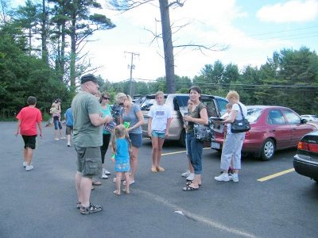

| Muskoka - 2010 |
| Уже второй год подряд часть нашей группы выезжает на несколько дней в Muskoka Bible Centre Место это замечательно тем, что отдых совмещается с духовным образованием, каждый день в церкви лагеря проходит три служения. Пасторы со всей Америки считают за честь проповедовать в Muskoka Bible Centre. В этом, 2010 году, MBC отмечает своё 80 летие. August 6th: MBC is pleased to present a concert by Steve Green, to be held after evening chapel. August 7th, at 3 PM, MBC will have a children's event/concert called God Rocks! Соответственно сайты об этих приглашённых гостях: www.stevegreenministries.org - Steve Green, www.godrocks.ca - God Rocks! |
|  | Мы были уже в этом месте в прошлом году, правда несколько меньшей компанией, но опыт
прошлого 2009 года был учтён. Алексей взят на внешнюю подвеску три велосипеда. При этом он утверждал что у машины не изменился ни центр тяжести ни ветровая нагрузка. Сильный трафик был на переходе с 400 хайвея на 11. Там оставили только одну полосу, а на двух шёл текущий ремонт. На обратном пути через три дня участок этот был уже отремонтирован. Первая длительная остановка была на Muskoka Information Centre: магазин, туалет, небольшой отдых. |
| Была небольшая задержка на развилке уже почти перед целью, когда Андрей, который вёл колонну свернул направо, когда надо было ехать прямо и Лена после возглавила колонну, но до самого лагеря сомневалась: правильно ли мы едем. |
| Парадная часть лагеря (странно звучит это слово, но оно очень верное для этого места)
расположена по берегу озера Мери и всегда выглядит очень красиво. Первый раз автор этой заметки был здесь почти 8 лет назад и фотографировал каждую деталь, но сейчас это привычно и снимков много меньше, да и не меняется здесь ничего. |
| Погода в этот раз нам благоприятствовала, только один раз днём был дождь с грозой, а в
остальное время главное направление - это озеро. Был один неприятный аспект - это следы от чаек. Их здесь очень много и следов от них тоже, так что просто полежать на травке около берега, это только что-то сделить. |
| Вторым главным занятием после отдыха "на воде" была еда, даже не сама еда, а её
приготовление. В нашем распоряжении был газ, электричество, древесные угли и конечно же обыкновенный, но такой желанный в лесу, костёр. Конечно же ещё масса съедобных продуктов, которые надо было подогреть, сварить, пожарить и опять же - съесть. |
| В привелигированном положении были самые маленькие: для них было всё и все! Каждый кормил их или держал на руках. Дети постарше были довольны тем, что их "свободу" практически не ограничивали и они носились по всей территории лагеря. |
|
| В первый же вечер нас посетили очаровательные гости. Их было трое, но только один раз
они были вместе, но сфотографировать их в такой компании я не успел. Наши врачи тут же авторитетно заявили, что лисы, которые не бояться людей, скорее всего бешеные. А это рыжие лисички людей не боялись и подходили до одного метра от человека. |
| На снимке слева Женя , а сзади лисичка улеглась! Но вот так чтобы с рук давать есть, как для оленей Алексей делает, так никто не решался: все боялись - а может и укусить! |
| Проповеди в церкви были разные по качеству и по тематике, но в любом случае мы их
обсуждали вечером у костра.
Итак, всего нас было 21 человек и из них 9 взрослых и 12 детей. Вот такой расклад. С Катей мы прикинули по возрастным группам: до года - 2 до 5 лет - 2 До 15 лет: - 8 До 60 лет - 8 Свыше 60 лет - 1 и это я. 5 возрастных категорий и все чувствовали себя хорошо.. |
| Домой возвращались опять колонной: пять машин друг за другом. Первым ехал Алексей и на
хайвее он стремился к 120 км/час, а мы были вынуждены ехать за ним. Всё закончилось благополучно, все приехали по своим домам, но воспоминания о чудесном времени проведённом вместе остались. |